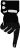

El evento más esperado de la cultura porteña. La 18° edición de La Noche de los Museos se realizará enfocada en los temas abordados por la Cumbre Global de Alcaldes de C40, un encuentro que reúne a representantes de todo el mundo que trabajan sobre el rol de los gobiernos locales para enfrentar el cambio climático.
Más de 230 sedes se alinearán al objetivo de este encuentro con iniciativas que invitarán a reflexionar sobre la sustentabilidad, la relación entre arte y naturaleza, y las consecuencias de la problemática ambiental y climática que atraviesa el mundo.
Sabado 22 de Octubre | 19 a 02hrs. Entrada gratuita.Para una mejor experiencia 


Letras y Pensamiento Astronomía con Mariano Ribas | Filosofía
GRATIS - 5/11 - 16hrs
Programas radiales Radio UBA presenta | Desde Dadart Artista invitada: Lorena Astudillo
6/11 - 19hrs
Programas radiales En Radio UBA Con Diego Fischerman
8/11 - 15hrsdesde la perspectiva del dadaísmo.
el coreógrafo de la geometría.

Con una modalidad teórico-práctica a partir de un encuentro on line de dos horas semanales el taller de Moda sustentable y reciclaje de prendas, se plantea como un espacio de experimentación para pensar y crear una moda más consciente basada en la regla de las 3R (Reducir – Reutilizar – Reciclar).
$4700 - Inicio: 14 de noviembre 2022 | Duración: 4 semanas
La propuesta de clases es brindar al alumno, las herramientas de Yoga para lograr el bienestar en la vida diaria. Practicaremos técnicas de Yoga...
$3600 - Inicio: 6/11 | Duración: 8 semanas
En este curso aprenderás el lenguaje nativo de internet e ingresar en el mundo de la web, lo harás de forma simple, incorporando los códigos necesarios para diseñar cualquier página web desde cero, basada en la construcción de un sitio web, seguro, real, sólido y accesible.
$5100 - Inicio: 12 de octubre 2022 | Duración: 4 semanas